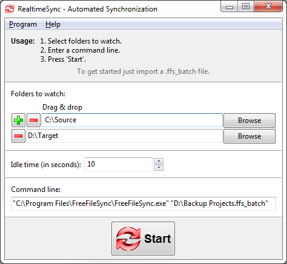
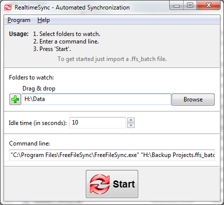

Automated Synchronization
The primary purpose of RealtimeSync is to execute a command line each time it detects changes in one of the monitored directories
or when a directory becomes available (e. g. insert of a USB-stick). Usually this command line will trigger a FreeFileSync batch job.
Example: Real time synchronization - in combination with FreeFileSync
Start RealtimeSync.exe located in FreeFileSync's installation directory and
enter all folders you want to monitor. Instead of doing this manually you can import a ffs_batch
file via Menu → File → Open. This not only extracts all directories relevant for synchronization
but also sets up the command line to execute the ffs_batch file each time changes are detected.
Now press Start to begin monitoring.

Note
- The command should not block progress. If you call a FreeFileSync batch job, make
sure it does not show any popup windows. See notes in Command Line Usage.
- RealtimeSync will skip showing the main dialog and begin monitoring immediately if
you pass a ffs_real configuration file or a FreeFileSync ffs_batch file as first
command line argument to RealtimeSync.exe. This helps you integrate RealtimeSync into your operating system's auto start:
"C:\Program Files\FreeFileSync\RealtimeSync.exe" "D:\Backup Projects.ffs_real"
"C:\Program Files\FreeFileSync\RealtimeSync.exe" "D:\Backup Projects.ffs_batch"
- RealtimeSync is not tied to starting FreeFileSync. It can also be used in other scenarios, like sending an email whenever a certain directory is modified.
Example: Automatic synchronization when a USB stick is inserted
Save a ffs_batch configuration in the USB stick's root directory,
e.g. H:\, to let RealtimeSync call it when the stick is mounted. Configure RealtimeSync as follows:

Whenever directory H:\Data becomes available, RealtimeSync executes the command line which starts the batch job located
on the stick. RealtimeSync will also trigger each time files are modified in H:\Data.
Note
The full path of the last changed file and the action that triggered the
change notification (create, update or delete) are written
to the environment variables %change_path% and %change_action%.
Example: Log names of changed files and directories (Windows)
Show which file or directory has triggered a change. Enter command line:
cmd /c echo %change_action% "%change_path%" & pause
Write a list of all changes to a log file:
cmd /c echo %change_action% "%change_path%" >> %UserProfile%\Desktop\log.txt
Note
When RealtimeSync executes a Windows batch file (bat or cmd) a black console window is shown. You can hide it using the Visual Basic script
HideConsole.vbs located in FreeFileSync's installation directory:
wscript "C:\Program files\FreeFileSync\HideConsole.vbs" C:\MyBatchFile.cmd
Limitations:
- If multiple changes happen at the same time, only the name of the first file is written to variable %changed_file%.
- While RealtimeSync is executing the command line, monitoring is inactive and changes occurring during this time are not detected.